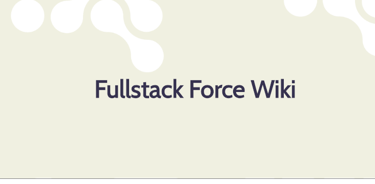
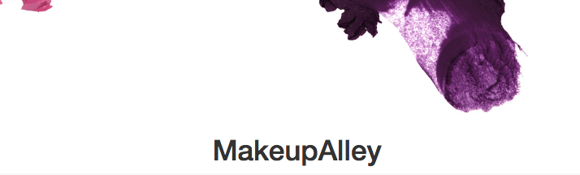

I am a problem solving addict, fueled by my passion for learning and self improvement. I take all problems as a personal challenge and conquer them swiftly and effectively. I lead with respect and appreciation for my coworkers allowing me to interact with them in an approachable and welcoming way.
After getting a taste of the development process at a previous job, I enrolled in General Assembly's first online Web Development Immersive program to start my journey as a Web Developer. A surprising outcome to starting this program is that I discovered the core reason why I was drawn to the profession of Web Development: I loved to solve problems and build something useful. As we dived into languages like Angular, Node and MongoDB, I also strengthened my communication skills, learning to ask better questions and approach problems from different angles. The greatest skill I have learned from this program is the ability to utilize all of the resources available. These skills have empowered me to take action confidently and strategically when I am presented with a new challenge.
The TumTum tracker was inspired by the outcomes tracker that students currently use while enrolled in the General Assembly Web Development Immersive Program. This was a collaborative MEAN stack project with another member of my class. The LinkedIn API and Github Jobs API was utilized to streamline the functionality of this app.
After having several years experience using a company wiki, I jumped at the opportunity to build my own when the choice was presented to me. One of the flaws to the company wiki I used in the past was how primitive it looked. I wanted to build a wiki that maintained a simple platform layout but actually looked professional and beautiful. A wiki that I would like to use! This project was primarily built with Node, Express and MongoDB and really exercised what I learned in class and tested my understanding of using bcrypt and mongoose schemas to store the information appropriately. One area of this project I would like to improve upon is the text input box being used. I am going to implement the "Marked" node package to give the user some formatting capabilities and I also want to setup a system to vote and approve articles that are posted.
MakeupAlley is one of the oldest makeup review sites on the internet! As an avid lurker on this page, I was inspired to make my rendition of the site. My site is built with Ruby on Rails and utilizes Bootstrap-sass to style. Devise was used for user creation and management, and raty was used to provide a visual rating system.